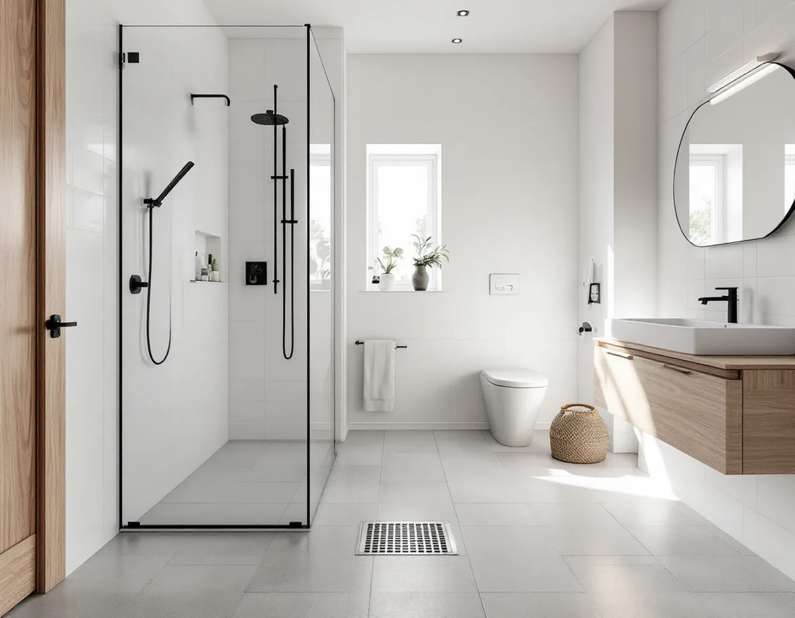
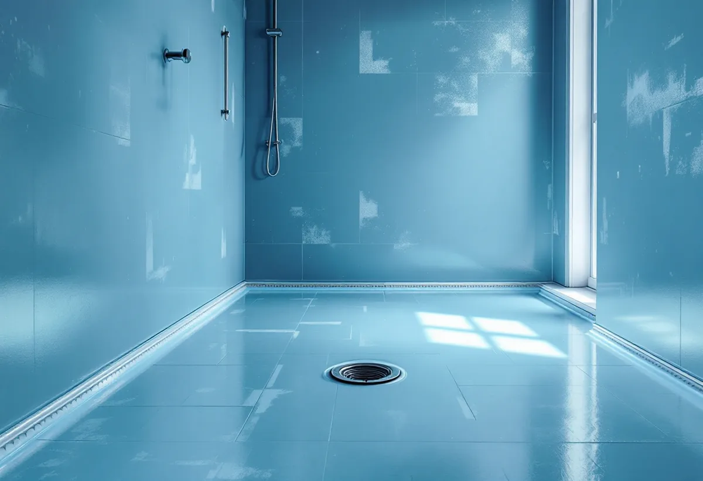

Platsbesök
Vi tittar på rummet, golvbrunnen, ventilationen och vad som finns bakom ytskikten, och stämmer av om föreningen eller kommunen behöver kopplas in.
Ett nytt badrum står och faller med tätskiktet, fallet mot golvbrunnen och papperen du får när jobbet är klart. Geal Entreprenad AB renoverar badrum i villor, radhus och bostadsrätter i hela Stockholm med en kontakt för rivning, våtrum, el, VVS och plattsättning. Du får ett gratis platsbesök och ett skriftligt kostnadsförslag innan något rivs.

Kakel, klinker och plastmatta är ytskikt. Det som skyddar huset mot vatten är tätskiktet under, och anslutningarna mot golvbrunn, rör och dörröppning. Enligt Boverkets byggregler om fuktsäkerhet ska ytor inomhus som kan väntas få vatten på sig ha ett vattentätt skikt, om det inte är obehövligt. Skiktet ska vara tätt även i skarvar, anslutningar och genomföringar, och i ytor med mycket vatten, som golvet i en dusch, ska antalet genomföringar begränsas. I rum med dusch ställer reglerna dessutom krav på golvavlopp och på att vattnet kan rinna dit.
BBR säger vad resultatet ska klara. Hur det görs i praktiken står i branschreglerna: GVK:s regler för våtrum, Byggkeramikrådets regler för våtrum med keramik (BBV) och Säker Vattens regler för VVS-installationer. Regelverken gäller olika delar av samma rum, och försäkringsbolagen har enligt GVK och Säker Vatten i regel som villkor att gällande branschregler har följts när ett våtrum byggts. Ett badrum som avviker från reglerna kan alltså bli en försäkringsfråga den dag något läcker.
Byggkeramikrådet beskriver att ett behörigt plattsättningsföretag är utbildat i BBV, använder godkända tätskiktssystem och får utfärda rådets kvalitetsdokument. Hos GVK är motsvarigheten ett auktoriserat företag som anmäler våtrummet till GVK:s stickprovskontroller. Fråga den du anlitar vilket regelverk tätskiktet byggs efter och vem som utför det – det ska stå i offerten.

GVK delar in våtrummet i zoner: plats för bad eller dusch, våtzon 1 och våtzon 2. Kraven på tätskiktet är högst där vattnet träffar mest. Vid duschplatsen ska golvet enligt GVK:s regler om golvlutning luta mot brunnen inom intervallet 1:150 till 1:50, i genomsnitt omkring 13 millimeter per meter. Lutningen gäller både underlaget för tätskiktet och det färdiga ytskiktet, och tätskiktets uppvik vid dörren ska ligga minst 20 millimeter över brunnens fläns så att vatten inte rinner ut i hallen.
Byggkeramikrådet tillåter ett plant golv utan tröskel in till badrummet, men tätskiktet ska ändå vikas upp vid dörröppningen. Att lägga nytt kakel ovanpå gammalt kan enligt rådet fungera för en kosmetisk förändring om väggen bär den dubbla vikten och materialtillverkaren godkänner det, men ett felaktigt fall rättas inte till på det sättet – lutningen mot avloppet måste finnas redan i underlaget.
Golvbrunnen är en vanlig fråga vid renovering. Enligt GVK om gamla golvbrunnar ska en brunn som är äldre än 1990 bytas för att reglerna ska följas, och samma regel finns hos Säker Vatten. En nyare brunn kan behållas om den är i gott skick och fixerad enligt dagens monteringsanvisningar. Går åldern inte att fastställa rekommenderar GVK byte. Har badrummet inte renoverats sedan huset byggdes är byggåret en bra ledtråd: är huset från före 1990 ska brunnen alltså bytas.
Elinstallationer som du inte får göra själv ska enligt Elsäkerhetsverket utföras av ett registrerat elinstallationsföretag, och registreringen kan du kontrollera. GVK skriver att el i våtrum ska planeras i samråd med elinstallatören, eftersom placeringen av dosor och genomföringar avgör om tätskiktet kan anslutas tätt. Byggkeramikrådet ställer högre krav på elgenomföringar i själva duschplatsen än i resten av rummet.
För rör och golvbrunn gäller Säker Vattens branschregler. Säker Vatten anger att ett auktoriserat VVS-företag ska lämna ett intyg efter arbetet där omfattning och eventuella avvikelser framgår, och att montörerna ska kunna visa branschlegitimation. Hos Geal utförs el och VVS av behöriga installatörer, och det framgår av kostnadsförslaget vem som gör vad.
Golvvärme ska enligt Byggkeramikrådet ligga under tätskiktet, och dess placering ska dokumenteras så att ingen borrar i slingorna när en toalett monteras senare. Värmen får inte slås på förrän tidigast 28 dygn efter plattsättningen och ska sedan höjas långsamt. Det är en detalj som påverkar när badrummet kan användas fullt ut.
Ett badrum som är rätt byggt men saknar dokumentation är svårt att visa upp vid en försäkringsskada eller en husförsäljning. GVK beskriver i sina kvalitetsdokument att ett auktoriserat företag anmäler tätskiktsarbetet och lämnar en kopia av våtrumsanmälan till beställaren. Enligt GVK:s råd inför arbetet bör du begära den kopian innan jobbet startar. Avviker underlaget från reglerna ska det noteras i en avvikelserapport från förkontrollen.
Har du anlitat ett GVK-auktoriserat företag ska du som konsument enligt GVK få ett våtrumsintyg när arbetet är klart. Byggkeramikrådets kvalitetsdokument fyller samma funktion för våtrum med keramik, men gäller inte för väggpartier som är målade i stället för kaklade. Från VVS-installatören ska du få Säker Vattens intyg. GVK:s råd efter arbetet är att också spara monteringsanvisningar och produktblad för tätskiktet, skötselråd för ytskikten, fotodokumentation och slutfakturan, och att notera vilken utgåva av branschreglerna rummet är byggt efter.
Enligt konsumenttjänstlagen (17 §) ska du reklamera ett fel inom skälig tid efter att du märkt det, och en reklamation inom två månader räknas enligt lagen som gjord i rätt tid. För arbete på byggnader går den yttre gränsen för att reklamera vid tio år efter att uppdraget avslutades. Geal lämnar garanti enligt lag (konsumenttjänstlagen).
I en bostadsrätt får du enligt bostadsrättslagen (7 kap. 7 §) inte utan styrelsens tillstånd göra ingrepp i bärande konstruktion, installera eller ändra ledningar för avlopp, värme, gas eller vatten, ändra ventilationen eller göra någon annan väsentlig förändring av lägenheten. En badrumsrenovering berör i regel flera av punkterna. Styrelsen får säga nej bara om åtgärden är till påtaglig skada eller olägenhet för föreningen, den får sätta villkor, och är du missnöjd kan hyresnämnden pröva beslutet.
Säker Vatten råder dig att läsa föreningens stadgar och underhållsplan, söka godkännande i god tid med handlingar som visar vad som ska göras, och att i regel inte börja innan styrelsens skriftliga medgivande finns. Grannar kan behöva informeras, till exempel när vattnet stängs av. Planerar föreningen ett stambyte är det klokt att samordna badrummet med det – läs mer om helhetsprojekt på villarenovering.
I en villa bestämmer du själv, men ansvarar också för helheten. Enligt Boverket om anmälan kräver installation eller väsentlig ändring av en anläggning för vatten eller avlopp i en byggnad anmälan och startbesked från kommunen, liksom väsentlig ändring av ventilationen. Om just din ombyggnad är en väsentlig ändring avgör kommunen, så ska avlopp eller ventilation flyttas är det värt att fråga kommunens bygglovsenhet först.
Vi tittar på rummet, golvbrunnen, ventilationen och vad som finns bakom ytskikten, och stämmer av om föreningen eller kommunen behöver kopplas in.
Du får en offert där arbete och material står var för sig, med tätskiktssystem, VVS och el beskrivna.
Ytskikt och inredning rivs, underlaget kontrolleras och eventuella avvikelser noteras innan nytt byggs upp.
Installatörerna drar rör och el, golvet byggs upp med fall mot brunnen och väggarna förbereds för tätskikt.
Tätskiktet monteras enligt tillverkarens anvisningar och branschreglerna, därefter plattsättning eller matta.
Porslin, blandare och inredning monteras, och du får intyg, produktblad och skötselråd.
Rotavdraget är 30 procent av arbetskostnaden och högst 50 000 kr per person och år. Rot och rut får tillsammans uppgå till högst 75 000 kr. Material, resor och fuktmätningar ger inget avdrag. Enligt Skatteverkets lista över godkända arbeten räknas bland annat kakel och klinker, att byta våtrumstapet mot kakel, installation av dusch, badkar, toalett, handfat och blandare samt modernisering av el. Geal drar avdraget direkt på fakturan.
I bostadsrätt gäller avdraget arbeten innanför lägenhetens tak, väggar och golv som du ansvarar för enligt stadgarna. Byte av golvbrunn ger avdrag, men inte flytt av golvbrunn, flytt eller byte av avloppsrör eller stambyte. I ett småhus som är yngre än fem år ger bara arbete som återställer det ursprungliga skicket avdrag, inte om- eller tillbyggnad – det är Skatteverkets så kallade femårsregel. För en bostadsrättslägenhet i ett flerbostadshus gäller inte den begränsningen.
Rummets storlek och hur mycket som ska rivas påverkar mest, följt av om golvbrunn, rör och el ska flyttas eller bara bytas på plats. Ett golv som måste byggas upp på nytt för att få rätt fall, en gammal brunn som behöver bytas eller ett bjälklag som ska förstärkas lägger till arbete. Materialval som storformatsplattor, golvvärme och inbyggd teknik spelar också in.
Därför lämnar vi inga schablonpriser. Efter ett gratis platsbesök får du ett skriftligt kostnadsförslag för just ditt badrum, med ROT-avdraget beräknat.
Planering, el, VVS och ventilation i köket.
Köksrenovering i Stockholm →Flera rum eller hela huset i ett projekt.
Villarenovering →Nya golv och slipning i resten av huset.
Golvläggning →Total entreprenad med en kontakt.
Byggfirma i Stockholm →